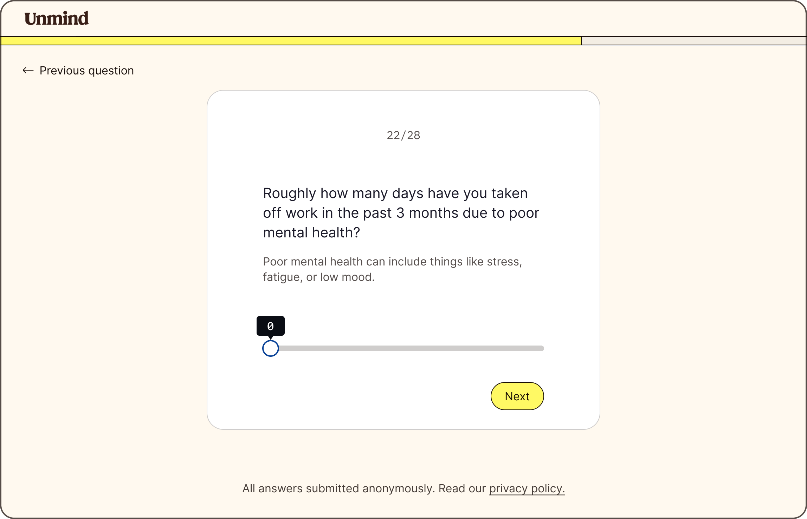
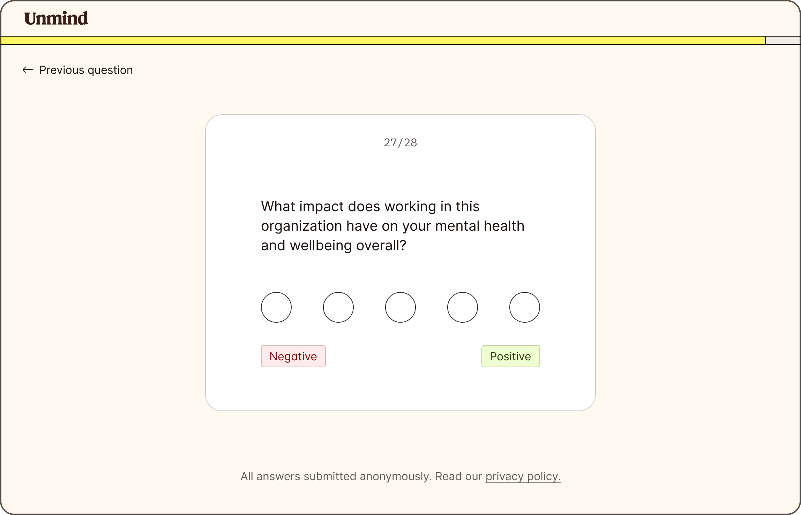
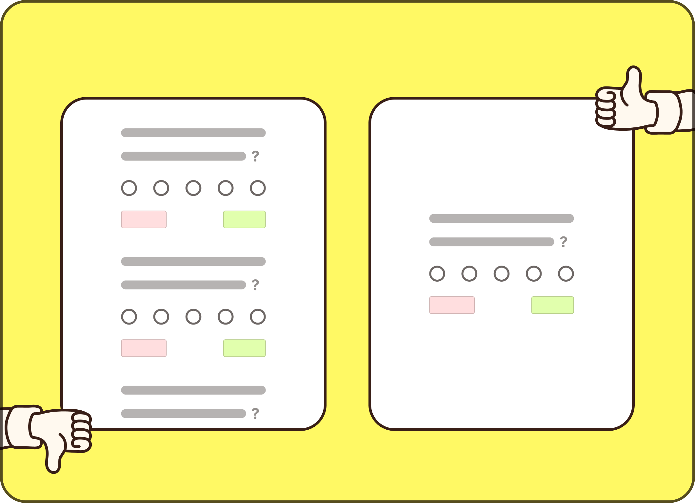
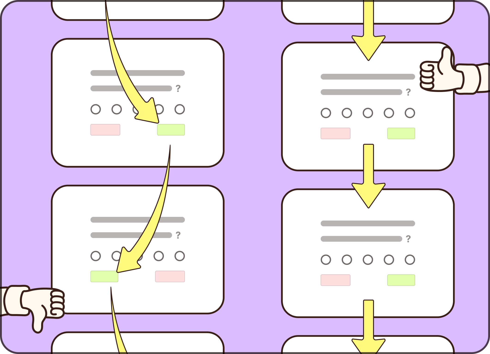
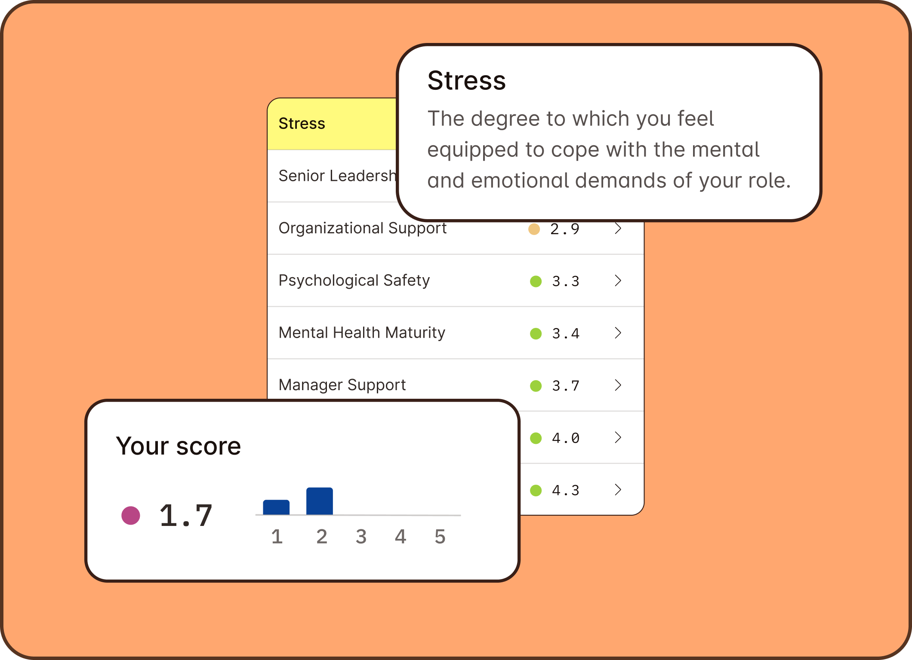
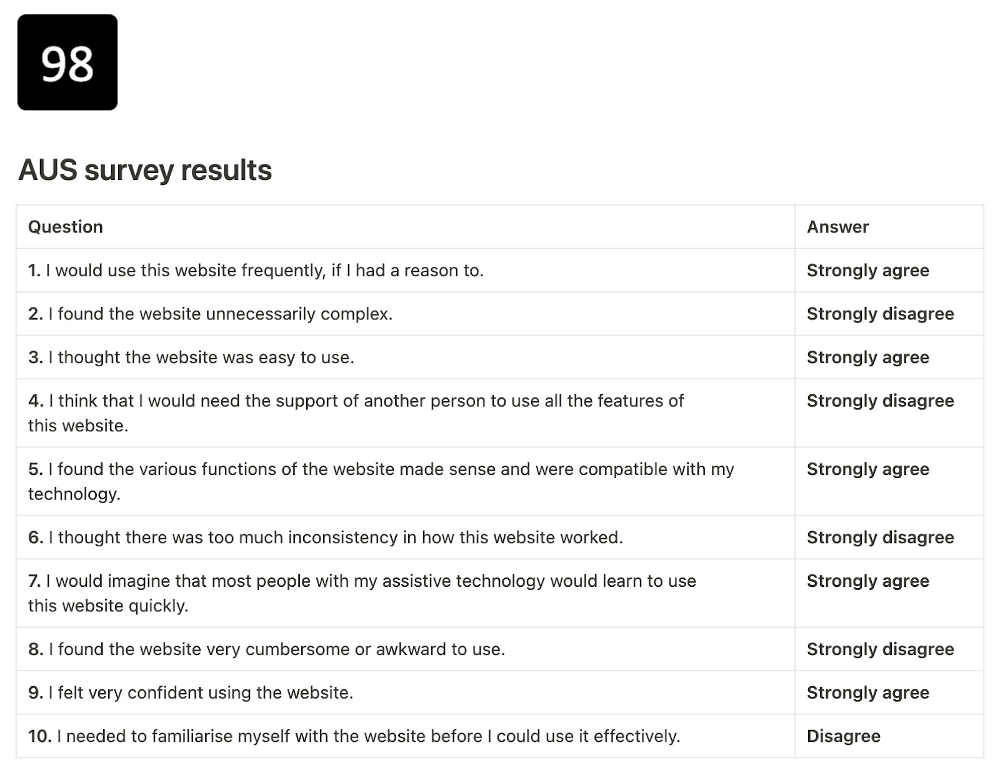
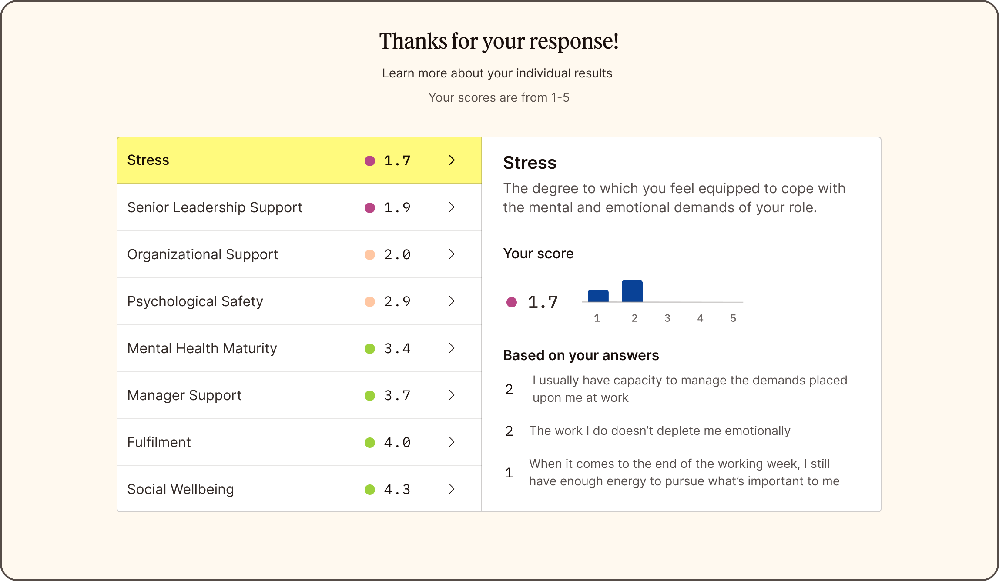

The design secrets behind Unmind Insights, the data-driven tool transforming workplace wellbeing.
Introduction
Unmind Insights is a platform that gives you a data-driven view of your organisational wellbeing – providing the insights, and actions, you need to drive lasting change. In this article I’ll be sharing how we built the Insights survey tool, detailing the design decisions we made and the impact they had on the product.

Design aims
We knew that if more employees completed the survey, we’d get more accurate results. Therefore we needed to make sure that the survey was as attractive and easy to complete as possible. This led to our primary design aims:
- High completion rate
- High return rate (users repeating the survey at a later date)
These aims led us to the following design principles.

KISS: Keep It Simple, Stupid.
Focus above all else.
In order to keep completion and return rates high, we need to keep the survey simple, allow the user space to focus, and keep cognitive load as low as possible throughout.
Our competitive analysis of existing survey platforms showed that many fell short – long lists of questions on most screens, and no clear effort made to keep questions simple. Even platforms who limited questions to ‘one per page’ sometimes allowed scrolling within one long page – a simple slip on the keyboard or mouse might mean a user loses their place on the page and thus their focus. We avoided this kind of confusion by removing ‘scrolling’ from the equation – adding a ‘back’ link just in case users felt the need to adjust an answer.
Design solution
One question per page. No scrolling.
Product impact
For users, higher survey completion means employees’ voices are being heard, and their wellbeing is being worked on.
For employers, higher survey uptake means greater insight into employee wellbeing and engagement. This puts leaders in a better place to make changes that will ultimately impact presenteeism, absenteeism and attrition while building high performance.

Low cognitive load
Steve Krug gave the design industry a maxim with his classic book “Don’t make me think”. A common problem we saw with current survey platforms is they failed to do this – forcing the user to figure out where to click to answer in the ‘negative’ or ‘positive’.
Our first prototypes didn’t take this into consideration. Through initial user testing it became instantly clear that we’d have to work harder to keep the ‘answering process’ as simple as possible.
This led us to another design decision – keeping all positive answers on the right.
Through simple experimentation we found: While it might be true that a user rapidly clicking through a survey won’t give a 100% accurate answer for each question, you’ll get a far more accurate answer than annoying them by forcing them to figure out which side to click on throughout the survey!
Design solution
No ‘switching sides’ – positive answers always on the right.
Product impact
A seamless experience with low cognitive load.
“We had feedback from our staff that they were surprised how quick and seamless the survey was”
HR leader at a Global consulting firm.

Provide value to the user
All the existing survey platforms we looked at had the same failing: They ended with a message that said essentially “thanks for your time – get lost”. We decided early on that we wanted to do something more here that would inform the user about their scores, the key areas they have problems in, what they mean, and what they can do about them.
As we see it, by providing value up front, we’ll not only help users understand themselves and their work better, we’ll encourage them to do the survey again when we ask them in six months time.
Design solution
An interactive results screen that helps users understand their key problems and explore what they mean.
Product impact
20% of our users spend time exploring the results screen – learning what their results meant. Many then go on to sign up to our platform to explore deeper.

Inclusive design from the start
Something that’s sometimes overlooked about accessibility is that it’s not just for users with the greatest challenges – it makes a product better for everyone, regardless of their abilities. For this reason we started thinking about accessibility from day one – not just from a screen contrast point of view, but building for screen readers and keyboard access.
Users can navigate and complete the survey using only the keyboard, without relying on the mouse or touch screen. This not only makes the survey more accessible, it allows anyone to take a break from pushing a mouse and quickly tap through the survey.
Design solution
- First class screen reader experience
- Easy keyboard navigation of entire survey and results screen
- Highest standard of accessibility throughout (WCAG AAA)
Product Impact
- Faster, simpler, and more inclusive user experience.
Business impact
- A more inclusive wellbeing strategy.
- Higher survey uptake.
- Greater insight into employee wellbeing.
Fable testing
After we’d made our own tests by closing our eyes and interacting via keyboard and screenreader, we used accessibility testing platform Fable to hear the real deal from users with disabilities.
- Initial results – 80% Fable accessible usability score (AUS). For reference, 65 is an average score for AUS
Changes we made:
- Fixed image alt text and tags
- Gave confirmation when a submission is made and page is updated
- Progress bar percentage fix
- Combo boxes now use standard voiceover interaction commands to activate.
After our updates, we reached an epic 98% Fable accessible usability score.


What we’ve learnt so far
While we’ve had great feedback on what we’ve built so far, we’ve learnt that there’s far more to an Insights platform than the survey tool itself.
Communicating with employees and building the kind of uptake we’re aiming for has been our main challenge. Rather than relying on the People team of our clients to manage employee communications, we’ve now built a system to manage our own campaigns and communicate directly with employees – to make sure we’re targeting the right people at the right time.
Impact
“Unmind Insights is the holy grail for employee wellbeing data.”
Head of Global Employee Relations Development, FTSE100 Finance Organisation
By running our own campaigns we’ve been able to raise engagement by over 40% – giving us richer data and more confidence in our results.
Feedback
We’ve also had incredible feedback on our tool – including glowing praise from Larry Emond, who was at Gallup for 30 years and coined the term “employee engagement” in 1997.
“That was an extremely well written survey. Who designed it?”
Larry Emond, Gallup
We’re now working on new dashboard visualisations to enable our clients to find insights quicker, and an AI powered recommendation engine to help leaders take the right actions to improve company culture.
Testimonials

Sam Gray
Product Manager, Unmind